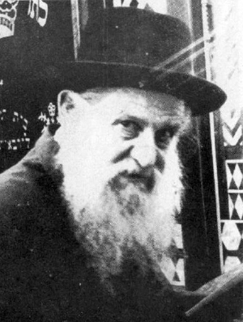

A Tamim and a Chassid Without Borders
In Charson as well as in Batum, in Paris as in Melbourne, R’ Betzalel Wilschansky preserved the image that was forged in Yeshivas Tomchei T’mimim in Lubavitch. * He was one of the first T’mimim in Kutais, Georgia and later he went to Batum as the Rebbe Rayatz instructed him. * After leaving Russia, he lived in Paris where he met the Rebbe. Then he moved to Australia and brought with him the unique flavor of Lubavitch.

The Rebbe Rayatz sent him to Batum in Georgia where he served as rav, shochet, and mohel. In 1925, he was a talmid in the beis midrash for rabbanim that the Rebbe Rayatz founded in Nevel. Between the years 1926 and 1928 he served as mashpia in Voronezh.
Then he moved to France where the Rebbe appointed him as a member of the hanhala of the mosdos. He then moved to Melbourne where he lived for twenty-five years and was a member of the hanhala of the mosdos.
R’ Betzalel was considered a baal shmu’a (a most reliable source). His stories were famous because in addition to his punctiliousness in relating each story in the name of the one who said it, and with great accuracy, he was always moved as though he was living the story.
When he farbrenged, he told short stories from the lives of our Rebbeim and the lives of great Chassidim.
He passed away on 2 Sivan 5741.
A TAMIM IN LUBAVITCH
R’ Yehuda Chitrik said that when R’ Betzalel asked a question in the Gemara, it was often the question of the Rashba.
Among the bachurim he was considered wealthy because his grandfather would occasionally send him a little money, which was a rarity among them. What did he do with this “wealth?” Thursday night, he bought a candle and together with R’ Yehuda Eber stayed up and copied maamarim and other manuscripts.
The mashpia in the yeshiva, R’ Gronem Esterman, was especially fond of R’ Betzalel and would invite him to his house where they learned maamarim of the Rebbe Maharash together. While they learned, R’ Gronem told many Chassidic stories which R’ Betzalel remembered accurately and told years later. Over the years that followed, until he married, he also learned Chassidus by R’ Shaul Ber Zislin and R’ Alter Simchovitz.
In 5677, he was one of the bachurim who went to the yeshiva opened by R’ Shmuel Levitin in Kutais. In 5678, he was appointed by R’ Eliezer Dvoskin, the rav of Charson and rosh yeshiva of the Tomchei T’mimim in that city, as a maggid shiur. Now and then, the rav would come in and listen to part of his shiur and when R’ Betzalel was finished, the rav would go over to him and give him feedback.
OPPORTUNITY IN BATUM
After marrying, he served as shochet in a number of villages and then returned to his family in Charson. In those days, R’ Shmaryahu Sasonkin was the rav in Batum. R’ Sasonkin was looking for someone who could be the shochet and he went to the Rebbe Rashab for this purpose. When he arrived in Rostov, he heard about R’ Betzalel and offered him the position. R’ Betzalel went to Rostov in order to ask the Rebbe whether to accept it.
Upon arriving in Rostov and meeting with his fellow Chassidim, they sat together after Mincha and spoke. The conversation touched on the observation that the Rebbe was particular not to describe a confluence of events with use of the word mikreh (which could also mean coincidence) and instead used the word hizdamnus (which could also mean opportunity). The gabbai then came out and told R’ Betzalel that the Rebbe was calling for him. He wasn’t at all ready for yechidus but he had no choice. When he walked in, the Rebbe smiled and said, “What do you say about this hizdamnus? Shmerel is here now and he needs a shochet.”
As per the instructions of the Rebbe, R’ Betzalel and his family traveled to Batum, and by Tishrei 5684/1923 he had already arrived and was the chazan and baal koreh on Rosh HaShana. For R’ Sasonkin this was a double bonus, for in addition to have a G-d fearing shochet, he also had a friend and someone to talk to. The two would walk great distances together outside the town as they discussed timely matters.
I HOLD OF YOU AS A SHOCHET
R’ Betzalel did not stay long in Batum. The climate there had a bad effect on his wife who became sick with asthma. In 1926, R’ Betzalel had to leave Batum.
That year, R’ Shmuel Levitin opened the beis midrash for rabbanim in Nevel. R’ Betzalel had yechidus and asked the Rebbe whether to join this beis midrash. The Rebbe said, “You want to learn rabbanus? I hold of you being a shochet in a big city. Good, fine. Go.”
R’ Betzalel joined the beis midrash but until the end of his days, in Russia, Paris and Melbourne, he worked as a shochet.
R’ Betzalel sat and learned in Nevel until he received smicha. R’ Shmuel Levitin found a city where he could serve as rav. R’ Shmuel prepared him for the journey and instructed him to prepare a sermon from Likkutei Torah saying, “There are many topics in Likkutei Torah.”
However, when R’ Betzalel arrived in the city, he learned that the custom was if the widow of the departed rabbi married someone suitable, he got the rabbinic position. When R’ Betzalel arrived, the widow said to him, “Will you take this right away from me?”
Despite the importuning of the householders, R’ Betzalel left the town and returned to Nevel. From Nevel, he went to Vekhne-Dneprovsk near Dnepropetrovsk, to serve as shochet. It was a small town and provided barely any work. R’ Betzalel would sit all day in the shul waiting for someone to come with a chicken or animal to shecht but people rarely showed up.
R’ Betzalel, already the father of three children, was particular about keeping the darkei ha’chassidus in which he also led his family. In a questionnaire that he filled out at that time, he wrote about himself, “And with regard to reviewing Chassidus, thank G-d I review Chassidus every Shabbos in my place… and when I was in Nevel I reviewed it a number of times and found favor in the eyes of R’ Shmuel Levitin.”
From 1933 until World War II, he lived in Voronezh, a large city in central Russia. He lived in the shul building and worked as a shochet. In those days, the T’mimim dispersed throughout Russia and many secret yeshivos were opened in various towns. R’ Betzalel’s home served as a warm place for many bachurim who stayed with him on their way to other towns.
In the summer of 1935, a yeshiva opened in Voronezh itself, and R’ Betzalel was appointed as the mashpia. This yeshiva was attended primarily by older bachurim who were just before shidduch age. The Yeshiva closed in 1938.
With the outbreak of war, the family fled the city and began a long period of wandering. In the course of their wandering, they arrived in Almaty where they were able to spend time with the Rebbe’s father, R’ Levi Yitzchok Schneersohn. From there they went to Kutais where there was a Yeshivas Tomchei T’mimim. R’ Betzalel made a great impact on the bachurim learning there. He would often remain after the davening and farbreng with R’ Shmuel Krislaver (R’ Shmuel Notik, may Hashem avenge his blood). After the war, he went from Kutais to Samarkand and from there he went to Lemberg with the rest of the Chabad Chassidim and escaped from Russia to Vienna.
In Vienna, the first thing the Chassidim did was start a yeshiva. R’ Betzalel was appointed as a member of the working committee of the yeshiva. Together with other distinguished Chassidim, including R’ Sasonkin, R’ Shmuel Betzalel Altheus, R’ Moshe Zalman Kamenetzky, R’ Yosef Goldberg, R’ Yisroel Kugel, and R’ Zalman Sudakewitz.
MEETING RAMASH IN PARIS
R’ Binyamin Gorodetzky’s efforts, following the Rebbe Rayatz’s instructions, brought many Lubavitcher Chassidim to Paris. R’ Betzalel and R’ Isser Kluwgant, who were among the first to arrive, informed the Rebbe of their arrival on 12 Iyar 1947. At first they lived in the Prima hotel which had thirty-three rooms that were given to Chabad Chassidim. In the hotel there was a large hall which served as the Chabad shul.
Ramash was in the city at this time. He had come to greet his mother, Rebbetzin Chana. The Chassidim went to the hotel where the Rebbe was staying, but they were refused entry since they were wearing old Russian hats. They immediately went to a hat store and bought modern hats and returned to the hotel.
Before Ramash left Paris, he met with R’ Betzalel and R’ Zalman Butman and spoke to them. He showed them how the Rebbe Rayatz wrapped his t’fillin straps, wrapping them around both sides of the battim.
With the arrival of R’ Betzalel and the other Chassidim in Paris, it became necessary to immediately open a yeshiva. The boys learned in the Rothschild shul in Bois de Boulogne (a large wooded park in the Parisian suburb of Boulogne) and the yeshiva was run by R’ Betzalel and R’ Sasonkin.
The Rebbe referred to this in a letter that he sent the two administrators in which he wrote, “Every country has different living conditions which need to be reckoned with when it comes to the times for learning, times for eating and sleeping etc. But as far as the main s’darim of Yeshivas Tomchei T’mimim, you are not to budge from them one iota, with the full intensity similar to the way it was in the land of Lubavitch.” The Rebbe was apparently also referring to problems regarding the very late sunset in France.
After a short while, the Rebbe Rayatz founded a spiritual vaad for the yeshiva and picked the members himself, including R’ Betzalel. The others were: R’ Avrohom Eliyahu Plotkin, who served as the head of the committee, R’ Nachum Shmaryahu Sasonkin, R’ Yisroel Blinitzky, and R’ Shlomo Chaim Kesselman.
SETTLING IN AUSTRALIA
Upon arriving in Paris, R’ Betzalel remembered an offer that he had received from R’ Moshe Zalman Feiglin who was living in Shepparton in Australia. Twenty years earlier, R’ Moshe Zalman heard about R’ Betzalel from a Russian immigrant and he tried to bring him to Shepparton, but R’ Betzalel did not receive a visa at the time. Now, R’ Betzalel asked the Rebbe Rayatz about this idea and the Rebbe encouraged it.
During the two years that passed until he left for Australia, the Rebbe continued to urge him to go, while he worked as a shochet in the Pletzel in Paris. In 1948, R’ Sasonkin suggested that they open a beis midrash for rabbanim, shochtim and sofrim and the Rebbe told him to appoint R’ Betzalel together with R’ Eliyahu Shmuel Kahanov as the supervisors of the sh’chita program.
R’ Betzalel arrived in Australia after Pesach 1949. He was the first Chassid from Russia to arrive there. He was followed, by the Rebbe’s instructions, by R’ Isser Kluwgant, R’ Shmuel Betzalel Altheus, R’ Nachum Zalman Gurewitz, R’ Yehoshua Shneur Zalman Serebryanski, and R’ Yisroel Abba Pliskin. It was with them that the Chabad revolution in Australia began which you have been reading about in the Serebryanski memoirs in this magazine.
The spiritual situation in Australia was poor. In the first letter he received from the Rebbe Rayatz after arriving in Australia, it said, “I was pleased to be informed … that you began to look into the spiritual situation there and with Hashem’s help will do something to improve the situation. Do not despair of having a good influence over every single person …”
If the Rebbe wrote not to despair, this was because the situation was quite bleak. The Rebbe wrote to R’ Moshe Zalman Feiglin the same day and urged him about the obligation of every Jew to help the T’mimim in fulfilling their holy role - “to shine forth light to our Jewish brethren with the light of Torah and mitzvos.”
Upon arriving in Australia, R’ Betzalel dealt with an interesting halachic question. Australia is across the International Dateline. How should someone who crosses the dateline count the omer? He wrote this question to the Rebbe MH”M who responded in a long and detailed letter (printed in Igros Kodesh vol. 3) and then spoke about it at the Lag B’Omer farbrengen of 5710.
(Another farbrengen when the Rebbe spoke about something connected with R’ Betzalel was on 20 Av 5710. A few days earlier, the Rebbe asked R’ Dovid Raskin to record his memories of the Rebbe’s father in Almaty. Among the things he wrote was that once R’ Betzalel went to the Rebbe’s father and saw him writing in the margins of his Tanya in chapter 41. When R’ Levik saw him, he hid the book with his hand.
On another occasion, they saw that he wrote about what it says in Tanya that before learning Torah one needs to intend that this is for the sake of heaven, like with a bill of divorce and a Torah scroll that must be written for the sake of heaven. R’ Levik noted that these two examples correspond to “veer from bad and do good” - the entirety of Torah. The Rebbe thanked him for writing this and spoke about it at the farbrengen).
A yeshiva was started in Shepparton and R’ Betzalel was one of the Chassidic figures from whom the bachurim drew inspiration. He would daven with the yeshiva minyan every day and spend hours davening. He also had a chavrusa in Yoreh Deia with one of the bachurim in which the bachurim saw his scholarship in Nigleh. On Shabbos he would spend a long time davening with enthusiasm.
Sources: Igros Kodesh, t’shura from the wedding of the Wilschansky-Rosenberg families, L’maan Yeid’u, Beis Moshiach, Chabad B’Shoah, Chabadpedia.
GIVE HIM WHITE BREAD
R’ Betzalel once traveled to the Rebbe Rayatz when the latter was staying in a dacha and he spent the night in the Rebbe’s home. In the morning, before leaving, he sat down to eat breakfast together with the secretary, R’ Chaim Lieberman. R’ Chaim ate regular black bread while R’ Betzalel was served a white roll. When he asked about this, the secretary said that the Rebbe had told him, “He is Ukrainian, give him white bread.”
When R’ Betzalel would tell this story, he would conclude, “The Rebbe did not merely give me white bread for that breakfast; he gave me white bread for life. Even in the hardest times, we had bread to eat.”
A BRIS IN VORONEZH
In 1933, a man came to R’ Betzalel’s house and asked, “Are you the mohel who came here recently?” When he said yes, the man asked him to come and circumcise his grandson. R’ Betzalel wanted to see the baby before the bris, as mohalim do, but the man refused. “Rely on me. Just take your tools and come.”
R’ Betzalel took his mila tools and got into the car which drove to a fine looking building. The man led R’ Betzalel into the building where he stopped and knocked on the door of one of the apartments. When the door opened, there stood a senior officer in the NKVD.
R’ Betzalel nearly fainted, thinking he had fallen into a trap. However, the officer reassured him, “I am the father of the baby. Come, let’s do the bris.”
When the bris was over, the officer said, “We don’t know one another,” and let R’ Betzalel go. He declined having him return to check the baby. R’ Betzalel went home, bringing with him expensive food items that his family never dreamed they would be able to eat.
D. Levanon. "A Tamim and a Chassid Without Borders." Beis Moshiach, no. 928 (May 28, 2014).